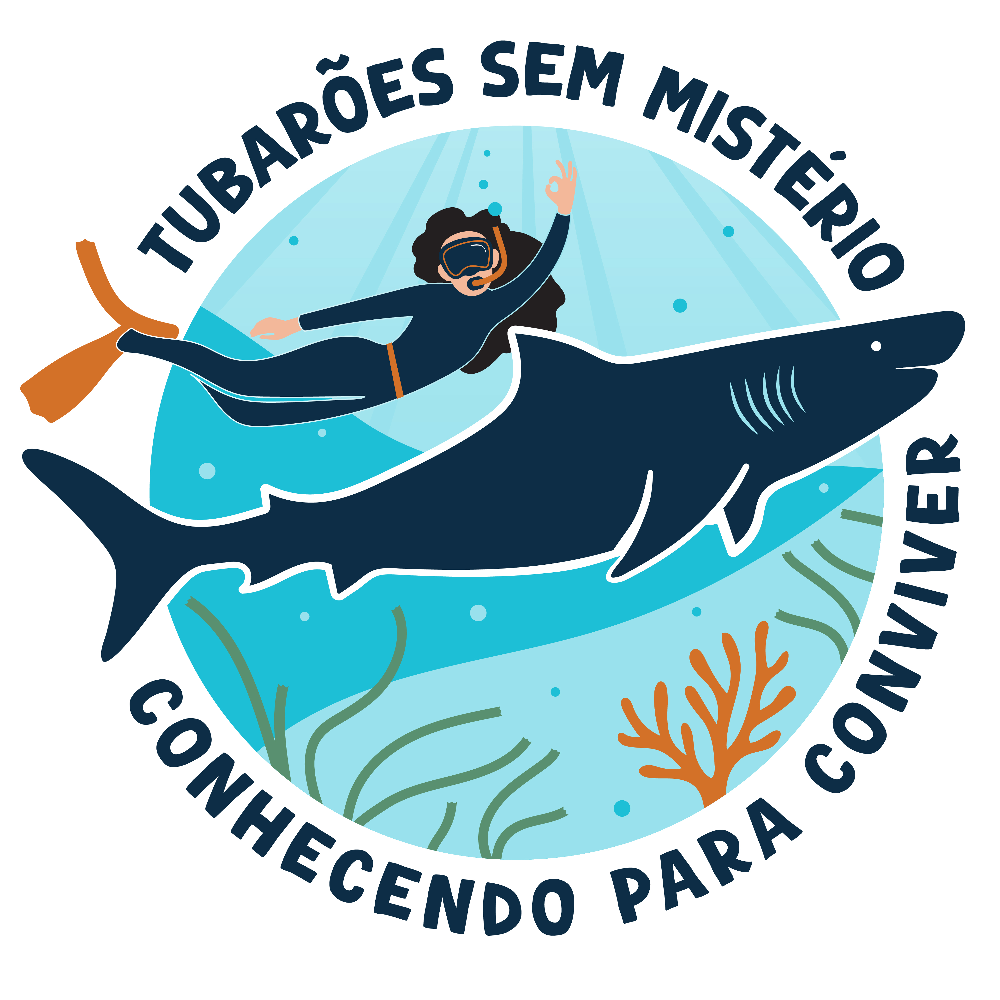

Este jogo foi desenvolvido para explorar, de forma interativa e educativa, os principais aspectos da biologia, ecologia e importância dos tubarões nos ecossistemas marinhos. Além disso, o quiz busca desmistificar ideias equivocadas e reforçar a importância da conservação dos tubarões, destacando seu papel como predadores de topo e reguladores das cadeias tróficas. Este jogo é um proDuto desenvolvido pelo Laboratório de Ecossitemas Aquáticos (LEAqua - UFRPE).